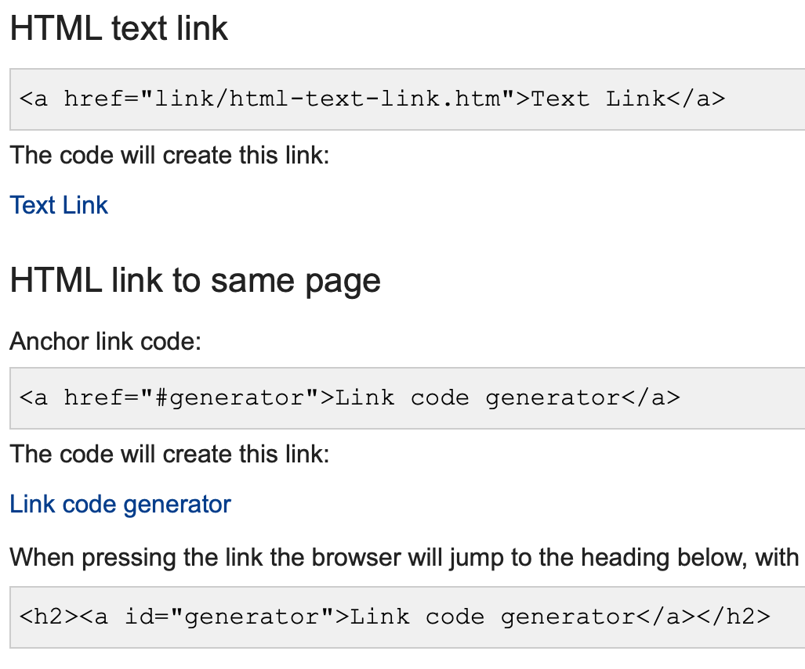

net.art series
Research Section
Page 3

When researching, I also would refer to a lot of discussion board and threads.
I would enter my question about my code into Google and go to a website or thread that had a lot of answers already posted so I could have different solutions to test out and chose from.